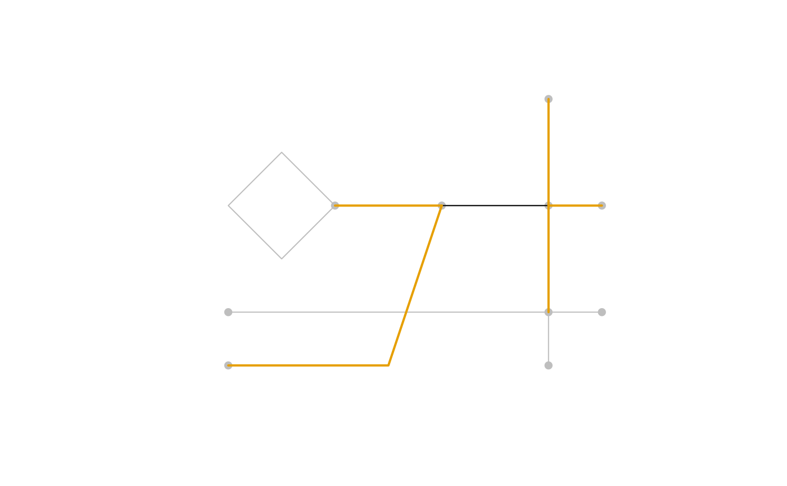

This function returns a vector of link IDs that are adjacent to a specified link in a road network.
Examples
# Create a road network
road_network <- create_road_network(sample_roads)
target_link <- road_network$links$id[7]
target_link
#> [1] "lk_000007"
# Get adjacent links
adjacent_links <- get_adjacent_links(road_network, target_link)
adjacent_links
#> [,1]
#> [1,] "lk_000001"
#> [2,] "lk_000005"
#> [3,] "lk_000006"
#> [4,] "lk_000008"
#> [5,] "lk_00000a"
# Plot the target link and the adjacent links
is_adjacent <- road_network$links$id %in% adjacent_links
adjacent_links_geom <- road_network$links$geometry[is_adjacent]
plot(road_network, col = "gray")
plot(road_network$links$geometry[7], add = TRUE, pch = 19)
plot(adjacent_links_geom, add = TRUE, col = "#E69F00", lwd = 2)
